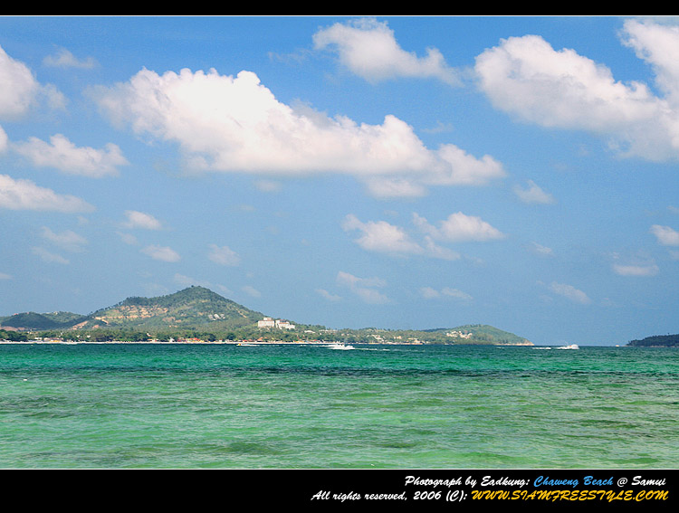
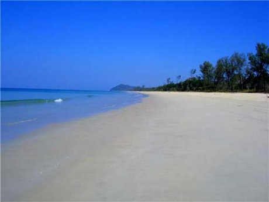
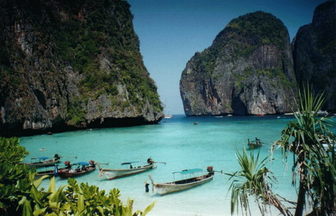
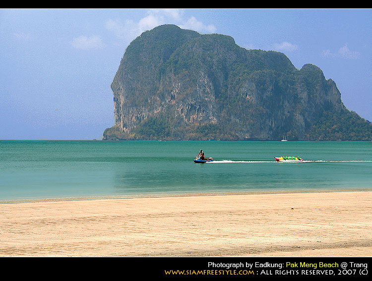
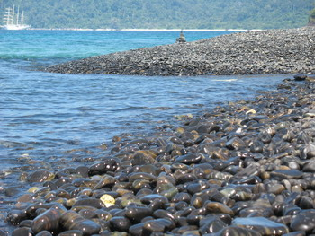

|  |
หาดเฉวง อยู่ทางตะวันออกของเกาะสมุย
เป็นชายหาดที่นักท่องเที่ยวชอบมาเล่นน้ำทะเล มีหาดทรายขาว น้ำทะเลใส ระดับน้ำไม่ลึกมากนัก มีหาดเฉวงน้อยอยู่ถัดไปทางใต้ ซึ่งจัดเป็นหาดทรายที่สวยงามมาก เวลาน้ำลงจะเห็นเป็นลานทรายกว้างขวาง ในคืนพระจันทร์เต็มดวงแสงจันทร์ที่สาดลงอาบพื้นทราย เห็นเป็นประกายแวววาวสวยงามประทับใจเป็นอย่างยิ่ง หาดเฉวงเป็นชายหาดที่นักท่องเที่ยวจากยุโรปนิยมมาอาบแดดกันมาก ใกล้ชายหาดมีที่พัก ร้านอาหาร สถานบรรเทิง ให้บริการนัก ท่องเที่ยวจะได้รับทั้งความสุขจากธรรมชาติและความสนุกสนานยามราตรี
|
|  |
หาดท้ายเหมือง
บริเวณหาดท้ายเหมืองเป็นที่ราบชายฝั่งด้านตะวันตกเป็นหาดทรายขาว ด้านตะวันออกจรด ป่าชายเลน ที่ขึ้นอยู่ริมคลองหินลาด พันธุ์ไม้ที่พบ ได้แก่ โกงกางใบใหญ่ โกงกางใบเล็ก ตะบูนดำ ตะบูนขาว ลำพู ถั่วดำ ถั่วขาว แสมขาว และแสมดำ บางส่วนเป็นป่าจากล้วน ป่าชายเลนนี้เป็นแหล่งอนุบาลสัตว์น้ำวัยอ่อน เป็นแหล่งสืบพันธุ์ และสถานที่วางไข่ของสัตว์บกและสัตว์น้ำต่างๆ เช่น กุ้ง หอย ปู ปลาต่างๆ จึงเป็นทั้งแหล่งที่อยู่อาศัย และแหล่งอาหารของนกและสัตว์ป่าหลากหลายชนิด เช่น นกกาน้ำเล็ก นกยางทะเล เหยี่ยวแดง นกแต้วแล้วป่าโกงกาง ลิงแสม พังพอนกินปู เหี้ย งูปากกว้างน้ำเค็ม งูสามเหลี่ยม งูแสมรัง และปลาซิวข้าวสารชวา เป็นต้น
บริเวณชายหาดจะเป็น ป่าชายหาด มี สนทะเล จิกเล หูกวาง หยีทะเล ปอทะเล เมา มะนาวผี และรักทะเล ส่วนพืชพื้นล่างได้แก่ สังหยู สาบเสือ ลำเท็ง ปรงทะเล เตยทะเล ผักบุ้งทะเล และถั่วทะเล ขึ้นอยู่ เป็นที่อยู่อาศัยของสัตว์หลากชนิด เช่น เหยี่ยวขาว นกออก ไก่ป่า นกกวัก นกหัวโตทรายเล็ก นกเขาใหญ่ นกกระปูดใหญ่ นกบั้งรอกใหญ่ นกกะเต็นอกลาย นกตะขาบดง นกแซงแซวหางปลา ลิ่นชวา กระแตใต้ ค้างคาวขอบหูขาวเล็ก ชะมดแผงสันหางดำ พังพอนเล็ก แย้ จิ้งเหลนบ้านเป็นต้น
บริเวณศูนย์กลางพื้นที่หาดท้ายเหมืองประมาณ 1,000 ไร่ มีสภาพเป็น ป่าพรุ ที่มีน้ำจืดขังอยู่เกือบตลอดปี สภาพดินเป็นดินทรายละเอียดขาวนวล สังคมพืชที่เด่นชัดในสภาพป่านี้คือ เสม็ดขาว บริเวณที่ดอนจะมีเสม็ดแดง ชะมวงป่า มะพลับพรุ ตีนเป็ด และหว้าน้ำ ขึ้นปะปน พืชอิงอาศัยที่ขึ้นรอบลำต้นไม้ขนาดใหญ่ เช่น กระแตไต่ไม้ สไบสีดา เกล็ดนาคราช เฟินก้ามปู และเฟินข้าหลวง โดยมี กระดุมเงิน โคลงเคลง ปลาไหลเผือก เข็มป่า รามใหญ่ กะทือ ย่านาง มันเทียน หวายลิง และเอื้องหมายนา เป็นพืชพื้นล่าง สัตว์ป่าที่สำคัญและสำรวจพบในป่านี้ได้แก่ นกยางกรอกพันธุ์จีน นกอีลุ้ม นกกระแตแต้แว้ด นกตบยุงหางยาว นกกะเต็นอกขาว หมูหริ่ง นากใหญ่ขนเรียบ หมีขอ หมูป่า กระรอกลายท้องแดง เต่านา ตะกวด งูหลามปากเป็ด งูเหลือม กบนา ปลาดุกลำพัน และปลาหัวตะกั่ว เป็นต้น
ในบริเวณแหล่งน้ำ ห้วย และลำคลองต่างๆ สำรวจพบปลาน้ำจืด 31 ชนิด ได้แก่ ปลาสลาด ปลาซิวใบไผ่ ปลาแขยงหิน ปลาดุกลำพัน ปลาซิวข้าวสารแคระ ปลาแรด ปลาช่อน ปลาก้าง ปลานิล เป็นต้น สัตว์น้ำที่พบบริเวณชายฝั่งหาดท้ายเหมืองได้แก่ ปลาทราย ปลากระบอก เต่ากระ เต่าหญ้า ปูลม ปูแสม หอยมวนพลู หอยตลับลาย กุ้งฝอย กุ้งตะกาด แมงกะพรุน
|
|  |
หาดนพรัตน์ธารา
เป็นชายหาดที่ทอดยาวเกือบ 3กิโลเมตรเดิมชาวบ้านเรียกว่า "หาดคลองแห้ง" เพราะช่วงน้ำลงน้ำคลองที่ไหลมาจากภูเขาทางด้านเหนือจะแห้งขอดกลายเป็นหาดทรายทอดลงไปในทะเล บรรจบกับเกาะเขาปากคลองบริเวณหาดเป็นทรายละเอียดปะปนด้วยเปลือกหอยเล็กๆ ประดับด้วยทิวสนเรียงรายตามชายหาด มองออกไปในพื้นน้ำมีทิวทัศน์ของเกาะแก่งในช่วงน้ำลงจนแห้งสามารถเดินไปยังเกาะเล็กๆ บริเวณหน้าชายหาดได้เหมาะสมสำหรับการพักผ่อนหย่อนใจได้เป็นอย่างดี เมื่อปี 2503 จอมพลสฤษดิ์ธนะรัชต์ ขณะดำรงตำแหน่งนายกรัฐมนตรี ได้มาพักผ่อนและประทับใจในธรรมชาติจึงตั้งชื่อให้ใหม่ว่า หาดนพรัตน์ธารานอกจากนี้บริเวณชายหาดยังเป็นแหล่งที่อยู่อาศัยของหอยชักตีนที่ใหญ่ที่สุดแห่งหนึ่ง
|
|  |
หาดปากเมง
ตั้งอยู่ที่ตำบลไม้ฝาด อำเภอสิเกา จ.ตรัง เป็นหาดรูปพระจันทร์ครึ่งเสี้ยวยาวประมาณ 5 กิโลเมตร มีความสวยงามและสงบเงียบ ชายหาดมีป่าสนตามธรรมชาติขึ้น จากหาดมองไปลักษณะคล้ายคนนอนหงายอยู่ในทะเล บริเวณหาดปากเมงมีท่าเทียบเรือปากเมงสามารถเช่าเรือไปเกาะไหง เกาะเชือก เกาะม้า เกาะแหวน เกาะกระดาน เกาะมุกและถ้ำมรกต
การเดินทาง ไปตามทางหลวงหมายเลข 4046–4162 (ตรัง-สิเกา-ปากเมง) ระยะทาง 40 กิโลเมตร เมื่อถึงหาดปากเมงเลี้ยวขวาประมาณ 1 กิโลเมตร นอกจากนั้นยังมีรถตู้ ตรัง-สิเกา-ปากเมง ให้บริการที่ถนนท่ากลาง ในอำเภอเมือง
|
|  |
หินงาม
เป็นเกาะขนาดเล็กทางทิศใต้ของเกาะอาดัง ทั่วทั้งเกาะหินงามเต็มไปด้วยหินสีดำ กลมเกลี้ยง มันวาว ความพิเศษของเกาะหินงามคือ เป็นเกาะที่ไร้หาดทราย เป็นหาดหินทั้งเกาะ บริเวณหาดด้านหน้าเป็นหินก้อนกลม ๆ ขนาดเท่า ๆ กัน หินทุกก้อนที่เกาะหินงามมีรูปร่างประหลาย กลมมน ทุกก้อนนอนเรียงรายทับถม บ้างก็จมอยู่ใต้ทะเล สันนิษฐานว่ากำเนิดมาจากแรงกัดกร่อนจากคลื่นลมนับล้านปี เล่ากันว่าหินทุกก้อนมีคำสาปของเจ้าพ่อตะรุเตา หากใครนำติดตัวไปจะเกิดแต่หายนะ แต่หากไปชมแล้วเรียงก้อนหินได้ 12 ชั้น แล้วอธิษฐานขอพรก็จะได้สมปรารถนาทุกสิ่งทุกอย่าง กลางเกาะหินงามเป็นป่าขนาดย่อมที่สมบูรณ์เขียวสด และมีหินขนาดใหญ่หลายก้อนระเกะระกะอยู่กลางเกาะหินงาม
|